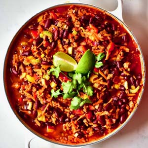
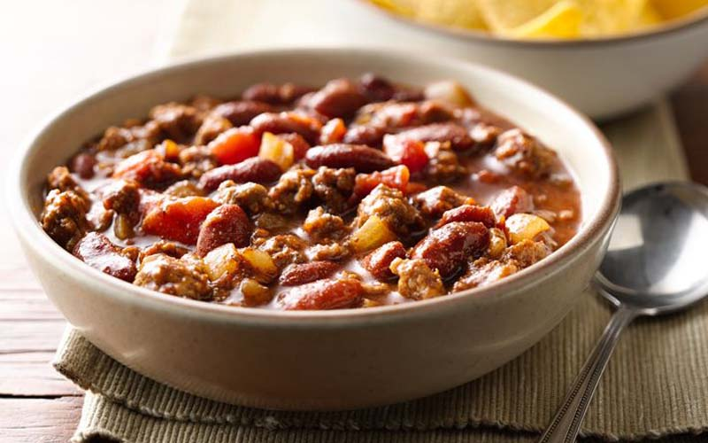

International Dishes Recipe 2:
Chili Con Carne
- Dish Description:
- Chili con carne (also spelled chilli con carne or chile con carne), meaning "chili with meat", is a spicy stew containing chili peppers (sometimes in the form of chili powder), meat (usually beef), tomatoes and kidney beans. Other seasonings may include garlic, onions, and cumin. The dish originated in northern Mexico or southern Texas. Geographic and personal tastes involve different types of meat and other ingredients. Recipes provoke disputes among aficionados, some of whom insist that the word chili applies only to the basic dish, without beans and tomatoes. Chili con carne is a common dish for cook-offs, and may be used as a side, garnish, or ingredient in other dishes, such as soups or salsas.

Ingredients:
- 2 pounds ground beef
- 2 tablespoons olive oil
- 2 medium onions, chopped
- 2 garlic cloves, minced
- 1 medium green pepper, chopped
- 1 1/2 teaspoons salt
- 2 tablespoons chili powder
- 3 teaspoons beef bouillon granules
- 1/8 teaspoon cayenne pepper
- 1/4 teaspoon ground cinnamon
- 1 teaspoon ground cumin
- 1 teaspoon dried oregano
- 2 cans (14-1/2 ounces each) diced tomatoes, undrained
- 1 cup water
- 1 can (16 ounces) kidney beans, rinsed and drained
- sour cream and jalapeno slices, optional
Directions:
- In a Dutch oven, cook beef over medium heat until no longer pink; drain and set aside.
- In the same pot, heat oil; saute onions until tender. Add garlic; cook 1 minute longer.
- Stir in the green pepper, salt, chili powder, bouillon, cayenne, cinnamon, cumin and oregano. Cook for 2 minutes, stirring until combined.
- Add tomatoes and browned beef. Stir in water. Bring to a boil. Reduce heat; cover and simmer for about 1 hour.
- Add beans and heat through. If desired top with sour cream and jalapeno.